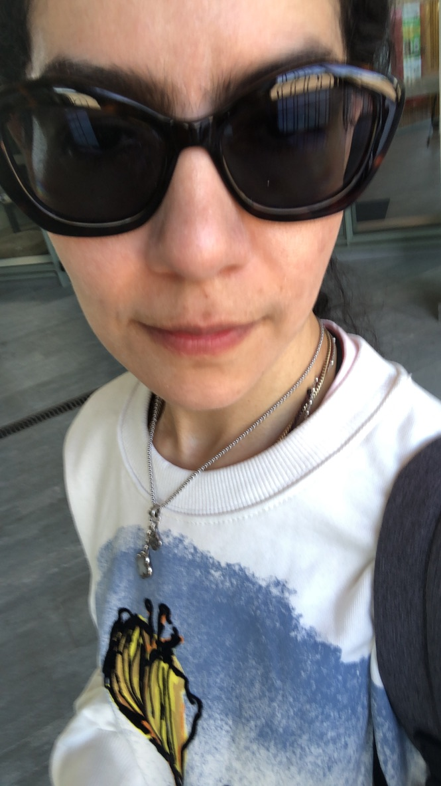

你好 (Nǐ hǎo)!! :) I am originally from Mexico with Spanish ancestry. Currently, I reside in California, USA. I am a practicing Roman Catholic. In addition to my spiritual life and related interest, I am a research scientist and engineer specialized in cryptography with a natural love for abstract algebra applications. Formal experience in classical and advanced areas such as, modern primitives, post-quantum cryptography, quantum algorithms, homomorphic encryption, and cryptographic proofs. I am interested pretty much in all aspects of cryptology with special interest in cryptographic proofs from PIOP, homomorphic encryption, design of symmetric primitives, post-quantum cryptography, and quantum cryptography research and development in all domains of implementation (hardware, firmware, and software), and cryptanalysis... including differential privacy (I wish I knew about this domain when I considered applied calculus to crytography during my B.Sc.).
Background Pure and applied mathematics, physics, engineering (computer engineering, software engineering) and computer science, and scientific research. Acquired very strong theoretical and applied experience in cryptography (software, hardware, co-designs), networking, natural language learning. Experience with TCP/IP protocol stack sockets programming with special interest in network security, L3, and routing algorithms. Index-calculus research and in-depth block cipher study (crypto work horse) project for advanced algorithm design. Demonstrated ability of advanced computer architecture and algorithm design with realization of modern and advanced cryptographic schemes in hardware, software, and co-designs (e.g., accelerating LMS (RFC8554), KECCAK hardware accelerator interface prototype for Ethereum), x86 compiler design, desing of Montgomery-type reduction-free modular multiplier from my master thesis addressing the most costly operation in both modern and PQC schemes as well as the corresponding attack vectors. Experience with quantum algortihms and familiar with qRNG. Extensive computer programming from x86 assembly to object oriented languages with expertise in C. Digital circuits design from boolean circuit design with TTL gates, digital circuit design and microprocessor design with board and FPGAs in both Verilog/SystemVerilog and MIPs, to application-specific system design and experience that goes beyond academic and industry cryptologic laboratory level scientific research and development with software and cryptographic hardware realizations to leading journals.
* relevant experience as software engineer for leading networking company * graduate teacher assistant for cryptography and network security at SJSU * experience building blockchain startup with seed funding * senior cryptology engineer at leading semiconductor working primarily in software (I was leading PQC developper that trained and led India and Poland team) and interacting with hardware team (based in Massachusetts) IN PARALLEL with outside research collaborations with hardware focused team of leading experts in the fields of homomorphic encryption and post-quantum cryptography from leading R2 private research institution, Villanova University * draft of hardware version of bootstrapping for CKKS-RNS with Spare Keys from Golang implementation to SystemVerilog * formal doctoral experience at a leading French engineering school * very special publications to International Workshop on the Arithmetic of Finite Fields (WAIFI) and Cryptographic Hardware and Embedded Systems (CHES) * see my résumé and ORCiD for details.
Given the diverse background and strong affinity for subjects of interest and love for learning, my experience and passion enable me to teach myself anything and accomplish anything I set my mind to. I love to drive alone and enjoy very much meaningful collaborations. I have an immense appreciation for diversity!!!!!!!!!!
Languages My mother tongue is Spanish. In addition, I am fluent in English and Italian with working professional French (I can read and understand just about anything) and beginner level for Russian and Portughese. Former French & Italian studies. In Portughese I can understand mostly everything but need to work on replying. I enjoy learning bits and bytes of romanized (also the symbols when they just stick without effort) versions of other languages from native speakers such as, Chinese, Turkish, German, and Farsi. I also enjoy singing in Greek, Aramaic, and Syrian Aramaic (mostly religious praise songs) and prayers in Latin (e.g., the Holy Rosary and as much as possible). In addition, I am expert in the language of Cryptology or Finite Field Arithmetic.
Currently This March 2025 I executed my own LLC, Cryptologia and considered exploring acquiring more experience abroad. I joined Télécom Paris summer 2025 and after demonstrating a capacity that exceeded the thesis directors and strongly defended my proposed thesis on Symmetric-Key-Based Post-Quantum Advanced Cryptography, I decided leave Télécom Paris and pursue independent research in the USA and instead, allow the opportunity for an honorary PhDs. Currently, in process of launching LLC overseeing all aspects etc. in parallel with research :)
Related Activities I love to participate in the events from IACR crypto/ches/pkc/etc, De Componendis Cifris, and also take advantage of any open source resources of interest such as truly qunatum random generation courses etc.
Other activities & Interests spirituality, running, strength training, listening to music [instrumental, rock, Azerbaijani music, etc.], reading, going out in nature, karaoke, and Turkish drama and Brazilian series (dubbed in Spanish) :)
fitness, health, and beauty :D (e.g.fashion, modeling, photography) and special projects (such as prayer groups)
♥ addicted to holistic self improvement and find effecting positive impact where possible immensely gratifying [if you are lent a position where you can help make others happy in a way that is truly dignifying, it's wonderful] ♥
I have Erdős #4 & Einstein #6 :)
and other interesting numbers:
I have Koç, He, & Xie #1
Mesnager, Tao, Joux, Stehlé, & Nascimento #4
Mirzakhani & Villani #5
Shannon, Perelman, Chiesa, Heisenberg & Hawking #6 ;)